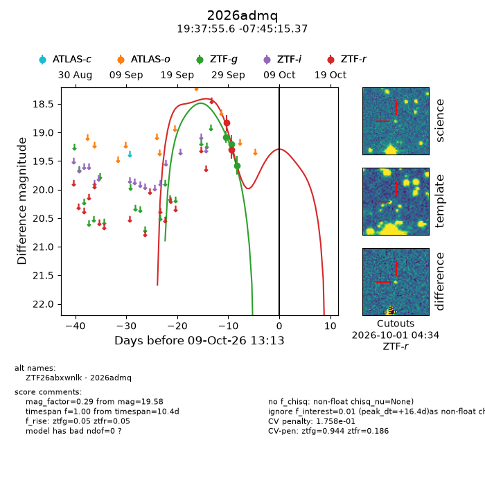
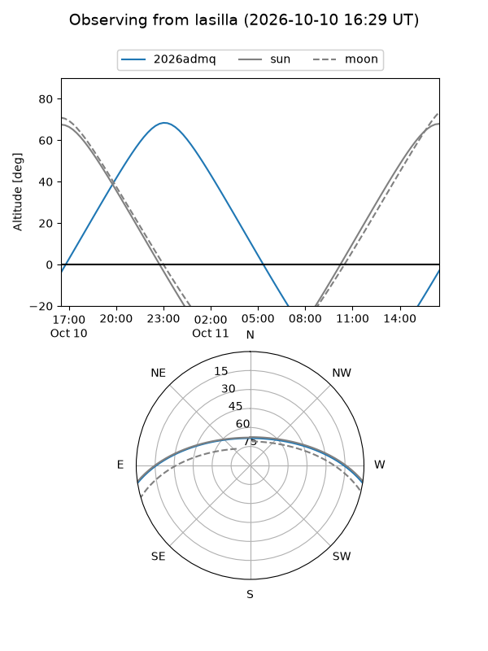
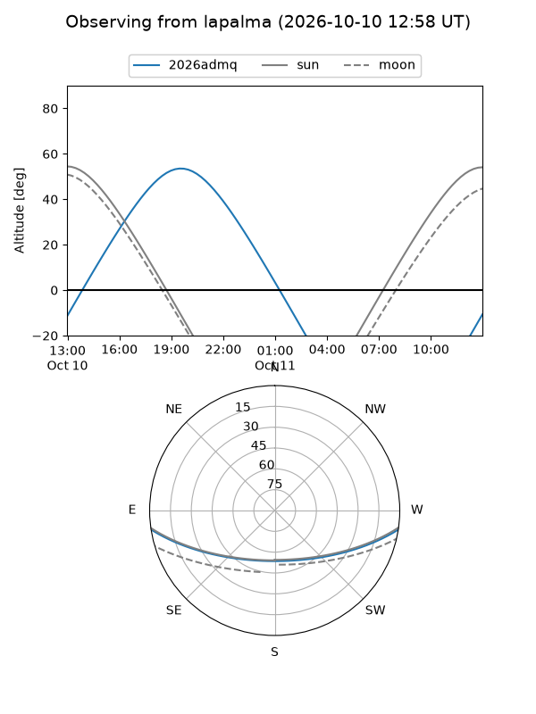
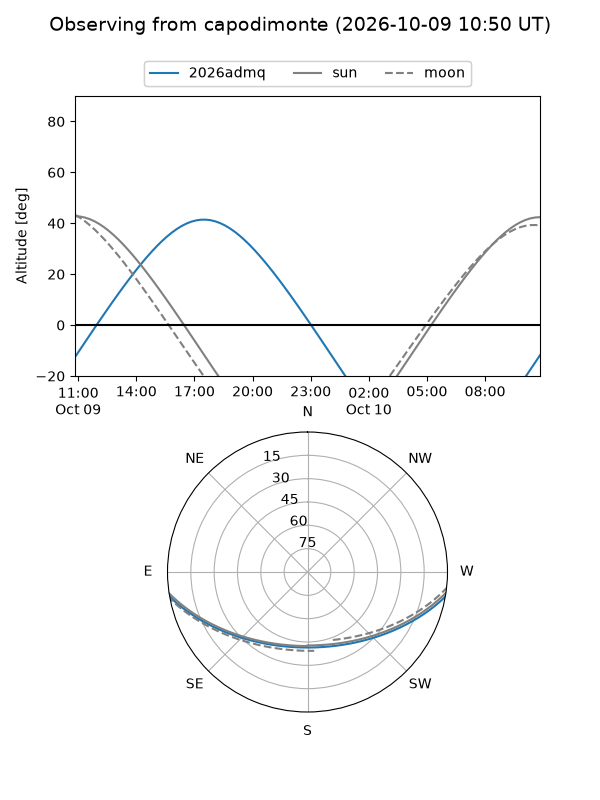
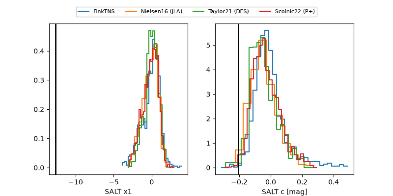

2026admq
Target 2026admq at 2026-10-09 13:15
Aliases and brokers:
FINK-ZTF: ztf.fink-portal.org/ZTF26abxwnlk
Lasair-ZTF: lasair-ztf.lsst.ac.uk/objects/ZTF26abxwnlk
ALeRCE-ZTF: alerce.online/object/ZTF26abxwnlk
YSE-PZ: ziggy.ucolick.org/yse/transient_detail/2026admq
TNS name: wis-tns.org/object/2026admq
Direct TNS query: direct search
alt names
ZTF26abxwnlk (ztf,fink_ztf)
2026admq (tns,yse)
Coordinates:
equatorial (ra, dec) = 294.4818,-7.75427
equatorial (HMS+DMS) = 19:37:55.64,-07:45:15.37
galactic (l, b) = (31.2169,-13.83821)
Flags:
peak dt: +16.4
likely cv: !!
Photometry:
last ztfg=19.58, ztfr=19.30
3 ztfg, 2 ztfr detections
Lightcurve

Visibility



Additional plots
